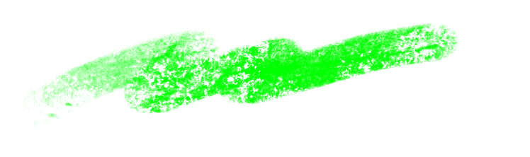

淨灘

淨灘活動一般可以分為個人發起以及組織發起，組織又有非營利組織發起的公益活動以及民間企業發起的企業社會責任活動。
回收
回收也稱為再利用或循環再造，指收集本來要廢棄的材料，分解再製成新產品，或者是收集用過的產品，清潔、處理之後再出售。回收可以節省資源、降低溫室氣體排放，由此減少能量消耗、空氣污染和水污染。
連署與法案
連署可以幫助促成相關法律的立定，透過立法來保障自然環境，並對造成其傷害的人加以進行懲處，透過法律的約束力及強制性來更有效的達到保護海洋生態的目的
捐款
沒有時間去淨灘、可以如何幫助海洋呢？我們也可以透過捐款的方式，為維護自然環境及海洋生態盡一分心力，我們為您整理哦一些近期開放捐款的活動